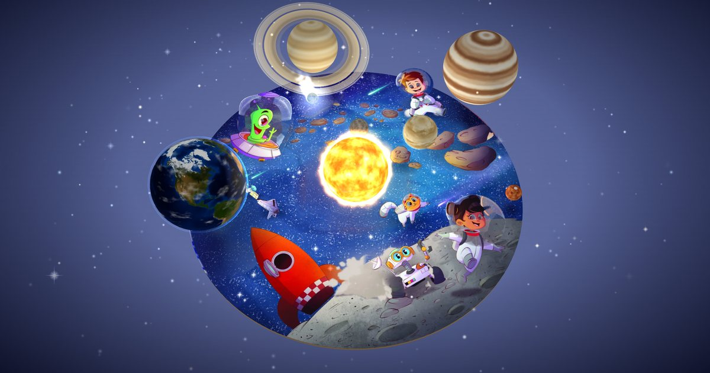

Ref. 2089.8 Xalingo · Quebra-cabeça Missão Espacial
A câmera reconhece o quebra-cabeça: o Sol acende, os planetas saem das peças em 3D e a turma da missão conta curiosidades do espaço.

Para a câmera funcionar, abra este endereço no Chrome (Android) ou no Safari (iPhone), e não dentro do Instagram, do Facebook ou do TikTok.
Indicado para crianças a partir de 4 anos. Brinque com um adulto por perto e em um lugar seguro. Use a câmera por pouco tempo de cada vez: ligada por muito tempo, ela esquenta o celular e gasta bateria. A imagem da câmera é usada só neste aparelho para reconhecer o quebra-cabeça: nenhuma foto é enviada ou guardada. Privacidade · Contagem de acessos
Música: “Ambient Space Background”, de Universfield (Pixabay).
© Xalingo Brinquedos · versão 1.0 · 17/11/2026
Procurando o quebra-cabeça…Enquadre o círculo inteiro, o disco do Sol ou um arco.